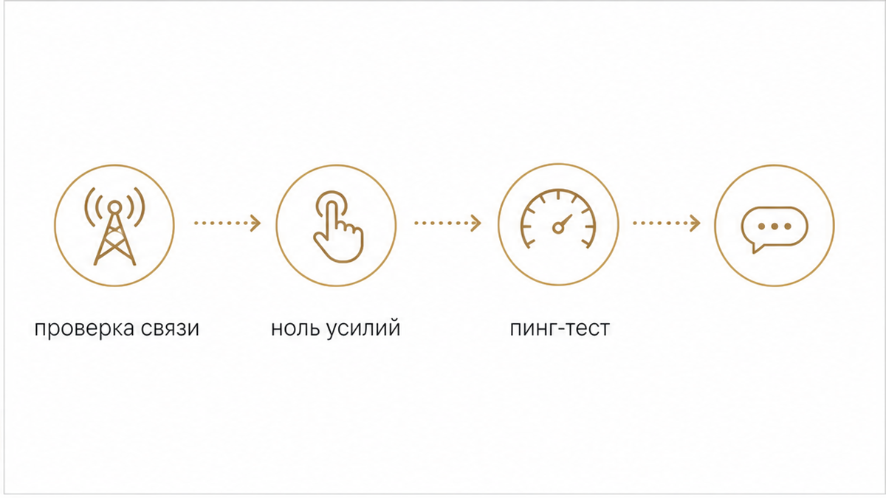
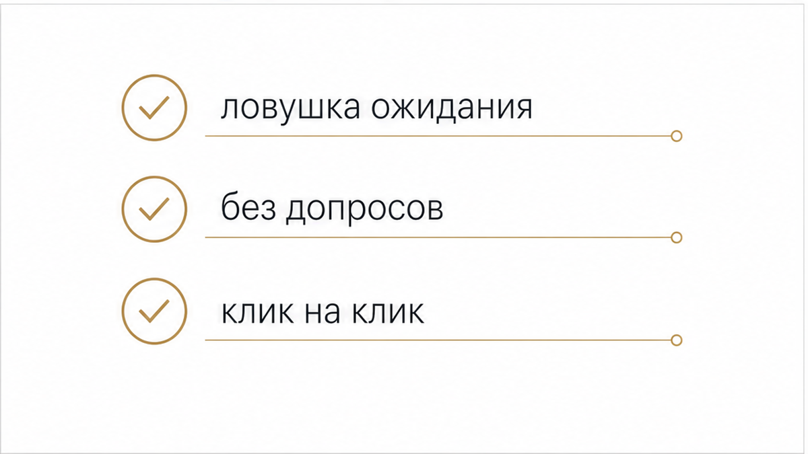
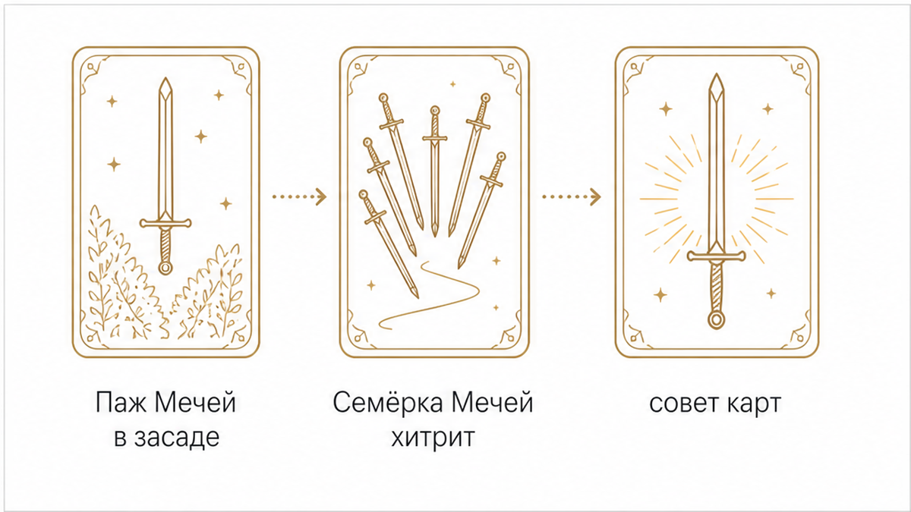

Пятничный вечер, на экране телефона вспыхивает уведомление. Мужчина открыл твою свежую историю и оставил быстрый огонёк. Или прислал смайлик в личные сообщения. Сердце делает знакомый толчок, пальцы зависают над клавиатурой в ожидании продолжения. Ты заходишь в чат, а там тишина. Ни вопроса, ни предложения встретиться на выходных, ни единого живого слова. Только одинокий значок висит в переписке, словно брошенная на ходу монетка. Проходит час, статус собеседника загорается зелёным, сменяется на «онлайн», но строчка ввода остаётся пустой. Внутри мгновенно закручивается воронка сомнений: если ему всё равно, зачем он проявляется? А если интерес есть, почему он упорно молчит?
Сразу к делу: о чём говорит зависшая реакция
Когда мужчина ограничивается полусекундным кликом и исчезает, он не делает шаг к сближению, а прощупывает почву с нулевыми затратами. Расклады Таро позволяют не гадать на кофейной гуще и не изводить себя догадками, а сразу увидеть скрытую подноготную ситуации:
Истинный мотив клика: это живой интерес, попытка напомнить о себе или случайный жест от скуки?
Причина молчания: что стоит за паузой — страх уязвимости, скрытая манипуляция или эмоциональная пустота?
Лучшая линия поведения: как отреагировать, чтобы не уронить планку и сберечь свои нервы?
Чтобы мгновенно прояснить картину, выбери удобный формат:
Скрытая механика полусекундного клика: почему мужчины бросают реакции вместо слов

Отправка реакции в мессенджере или социальной сети занимает ровно полсекунды. Это действие требует нулевых усилий и не несёт никакой эмоциональной ответственности. Мужчине не нужно подбирать слова, формулировать мысль, рисковать получить отказ или брать обязательства за дальнейшую беседу. Достаточно коснуться экрана подушечкой пальца.
За этим простым цифровым касанием почти всегда стоит один из четырёх психологических механизмов:
Проверка доступности (пинг-тест): Мужчина бросает пробный шар, чтобы проверить, держишь ли ты его в фокусе. «Ты всё ещё на связи? Ты откликнешься? Я всё ещё имею над тобой влияние?». Если женщина в ответ тут же начинает развёрнутую беседу, он получает подтверждение собственной значимости и спокойно возвращается к своим делам, не вложив ни грамма усилий.
Орбитинг и бредкрамбинг: В режиме орбитинга человек годами кружит по периметру твоей жизни — регулярно просматривает публикации, оставляет лайки и стикеры, но избегает прямого сближения. Это тактика «хлебных крошек» (бредкрамбинг): подбрасывать микроскопические дозы внимания, чтобы держать тебя на эмоциональном поводке про запас, создавая иллюзию скорого контакта.
Страх уязвимости и избегающий тип привязанности: Иногда у человека действительно мелькает импульс к общению, но следом накатывает страх перед открытым диалогом. Эмодзи становится удобным щитом. Если что-то пойдёт не так, всегда можно отшутиться: «Я просто кликнул на картинку, ничего такого».
Механический автопилот от скуки: Психологический парадокс цифрового внимания заключается в том, что более чем в 65% случаев отправка реакций без текста происходит в состоянии полного эмоционального штиля. Человек листает ленту в транспорте, на совещании или лёжа на диване. Он нажимает на значок машинально и забывает об этом через минуту. При этом женщина на другом конце провода способна потратить несколько часов на напряжённое ожидание, обсуждение жеста с подругами и конструирование тайных смыслов.
Ловушка додумывания и женские ошибки: почему нельзя отвечать текстом на смайлик

Главная ловушка подобных ситуаций — проекция. Женщина наделяет безликий огонёк собственной глубиной, страстью и надеждами: «Он думает обо мне», «Он скучает, но не решается написать первым». Включается режим ожидания, который выматывает сильнее открытого конфликта.
На фоне этого напряжения легко совершить три типичные ошибки, которые мгновенно ломают баланс значимости:
Отвечать развёрнутым текстом на пустой значок: Когда на полусекундный клик женщина выкатывает приветливое «Привет! Как твои дела? Чем занимаешься?», себестоимость контакта резко перекашивается. Мужчина вложил ноль, а получил полноценный интерес и готовность общаться. Ценность такого диалога в его глазах мгновенно падает.
Устраивать допрос и выяснять подтекст: Сообщения в духе «И что значит этот огонёк?», «Зачем присылать смайлики, если молчишь?» или «Мы теперь только стикерами общаемся?» выглядят как претензия уязвлённого человека. Они сразу ставят женщину в позицию просительницы, требующей внимания у закрытой двери.
Зависать в мониторинге: Бесконечное обновление чата, проверка времени последнего захода в сеть и подсчёт минут превращают вечер в пытку. Мужчина даже не подозревает о буре, которая бушует в твоей голове, пока ты добровольно отдаёшь ему свой ресурс.
Что показывают арканы Таро: как карты раскрывают истинные мотивы

Когда логика буксует, а прямого ответа от человека нет, карты Таро помогают заглянуть за фасад молчания и увидеть истинную расстановку сил. В ситуациях с зависшими реакциями чаще всего выпадают четыре ключевых аркана:
Паж Мечей (цифровая слежка и незрелое любопытство): Аркан скрытого наблюдения и разведки. Человек сидит в засаде, собирает крохи информации, выглядывает из-за угла, но панически боится зрелого прямого контакта. Его реакция на историю — это импульсивный жест подростка, который нажал на звонок чужой двери и спрятался за углом, проверяя, выйдешь ли ты на порог.
Семёрка Мечей (манёвры, хитрость и проверка границ): Карта обходных путей и осторожных проверок. Человек принципиально не идёт по прямой. Ему важно получить твою эмоциональную реакцию даром, не раскрывая своих карт и не беря на себя обязательств. Часто этот аркан указывает на то, что мужчина несвободен или ведёт параллельное общение, прощупывая почву на запасном аэродроме.
Восьмёрка Кубков (эмоциональное дистанцирование и остывание): Аркан тихого ухода. Мужчина понимает, что прежней близости уже нет, а развивать отношения он не готов или не имеет сил. Его огонёк или смайлик — это не попытка вернуться, а ностальгический или виноватый кивок вслед уходящему поезду. За этим жестом нет желания вкладываться, там только пустота и усталость.
Двойка Мечей (глухая защита и внутренний тупик): Человек с повязкой на глазах и скрещенными клинками на груди. Он заблокировал свои чувства и загнал себя в тупик: с одной стороны, его тянет проявиться, с другой — парализует страх сделать реальный шаг. Реакция отправлена на ощупь, но следом мгновенно опускается забрало, потому что к честному разговору он сейчас глух и не готов.
Практика: чеклист шагов, как реагировать на пинги и вернуть контроль над ситуацией
Чтобы не растрачивать вечер на пустые тревоги и не подыгрывать чужим манипуляциям, держи чёткий алгоритм действий:
1. Эмоциональный тайм-аут: Ни при каких обстоятельствах не реагируй мгновенно. Возьми паузу минимум на пару часов, а лучше до следующего утра. Мгновенный отклик сигнализирует мужчине, что ты сидишь у экрана и караулишь любое его движение.
2. Железный запрет на допрос: Не требуй объяснений и не пытайся расшифровать его смайлики вслух. Мужчина, который захочет поговорить, напишет слова. Всё остальное не требует твоего словесного вмешательства.
3. Правило зеркальной себестоимости: Отвечай только на той же глубине, которую предложили тебе. Если очень хочется поставить точку — поставь нейтральный лайк на его реакцию и сразу закрой мессенджер. Клик на клик. Никаких встречных вопросов и развёрнутых фраз.
4. Фильтр «действие против клика»: Раз и навсегда зафиксируй для себя границу: смайлик на историю — это не звонок, не поступок и не предложение встретиться. Пока мужчина не написал конкретное приглашение или вопрос, считай, что никакого шага с его стороны сделано не было.
5. Информационный детокс: Переверни телефон экраном вниз. Займись реальными делами: приготовь вкусный ужин, посмотри фильм, встреться с подругой или прими ванну. Забери своё внимание из чужого экрана и верни его себе.
6. Диагностика через карты при застрявшей тревоге: Если мысли всё равно крутятся вокруг чата, разложи карты. Трезвый расклад покажет, с чем ты имеешь дело на самом деле, и быстро снимет навязчивое желание написать первой.
Как снять неопределённость и вернуть себе душевный покой
Твоё время, внимание и вечер стоят слишком дорого, чтобы отдавать их в обмен на небрежные полусекундные касания. Не позволяй чужой нерешительности или лени держать тебя в подвешенном состоянии. Когда правила игры становятся прозрачными, тревога отступает, а контроль над ситуацией возвращается в твои руки.
Если ты хочешь точно знать, стоит ли ждать от него реальных шагов или пришло время перевернуть страницу, загляни в расклады:
Услышать глубокий аудиоразбор: открой расклад «Суть – Тень – Вектор» в приложении ВКонтакте, в приложении Макс или в приложении Telegram, чтобы получить ясный ориентир и перестать растрачивать себя на пустые догадки.